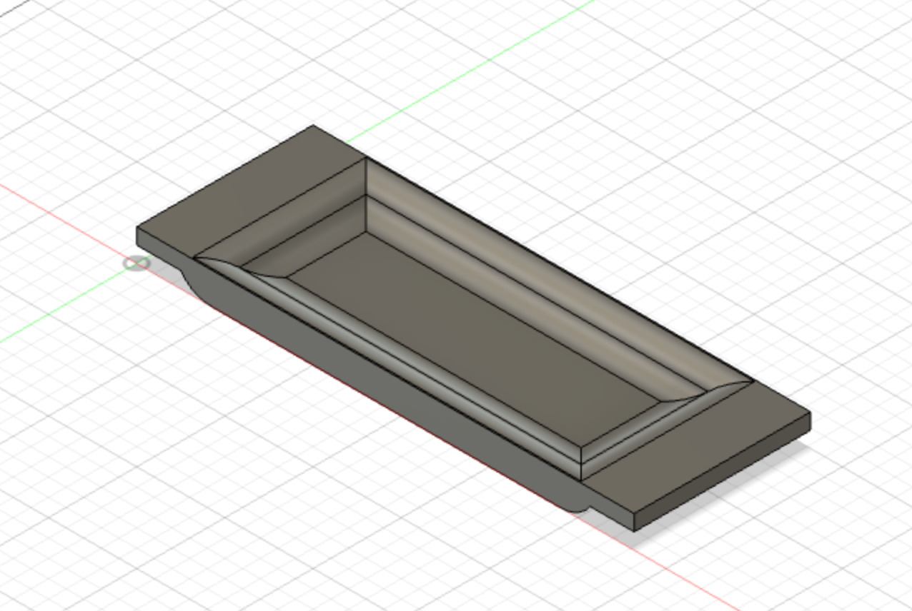

Lokaverkefni - Hópaverkefni
Verkefnalýsing
Verkefnið fólst í því að hanna og teikna eitthvað sniðugt sem að lokum væri framleitt. Gerð var krafa um að hluti hönnunarinnar yrði framleiddur með fræsingu en notast mátti við aðrar framleiðsluaðferðir fyrir íhluti, svo sem geislaskurð eða þrívíddarprentun, sem kynntar höfðu verið í áfanganum fyrr á önninni. Nota átti Shop Bot við fræsingu.
Skipulag
Það fyrsta sem við gerðum var að lesa verkefnalýsingu beggja þátta. Þar kom skýrt fram að skrásetja þyrfti verkefnaskiptingu og að sniðugt væri að nota hugbúnaðinn Trello. Við réðumst því strax í þann þátt og fengum við það góða hugmynd um það hvernig við ætluðum að framkvæma verkefnið í heild. Hér fyrir neðan er skjáskot af trello blaðinu í miðju ferli en þar má sjá skiptingu verkþátta ásamt tímaramma hvers þeirra.
Trello skipulagstól
Hugmyndin
Við vorum strax sammála um að hanna eitthvað sem við gætum allar hugsað okkur að nota. Við erum miklar stemningskonur og leggjum mikið upp úr því að hafa huggulegt í kringum okkur. Við byrjuðum að googla og slógum inn leitarorð í samræmi við það sem við höfðum rætt rétt áður. Um leið og við rákum augun í mynd af einföldum baðbakka ákváðum við að þetta væri okkar hönnun. Við sáum mörg tækifæri í útfærslu hönnunarinnar og fórum næst í að finna eiginleika sem okkar baðbakki ætti að búa yfir. Eiginleikar okkar baðbakka eru eftirfarandi:
- Standur fyrir spjaldtölvu með mismunandi hallastöðum
- Standur fyrir síma
- Vínhús
- Innbyggður kertastjaki fyrir sprittkerti
- Bakki undir snarl o.fl.
- Stillanleg stærð fyrir mismunandi baðkör
Hönnun
Hér verður hönnun á hverjum eiginleika baðbakkans útskýrð ásamt grunninum sem við fundum á netinu. Grunnur baðbakkans samanstendur af handföngum/umgjörð og plötu sem rennt er inn í hana en umgjörðin er stillanleg og hentar því fyrir nokkrar stærðir baðkara. Hér fyrir neðan má sjá dæmi um hönnun sem við fundum á netinu og sem við höfðum til hliðsjónar í þessu verkefni og fyrstu rissuna okkar sem sýnir fídusa sem við vildum hafa í hönnuninni okkar.
Takmarkanir fræsingar og geislaskurðar
Þegar við hófumst handa við að hanna og teikna baðbakkann vorum við ómeðvitaðar um nokkrar takmarkanir fræsingar og geislaskurðar. Fyrir fræsinguna voru það stærðirnar á bitunum sem voru í boði, það að ekki sé hægt að gera kúpta skáhalla, að ekki sé hægt að gera 90 gráðu horn og að það sé flókið að fræsa frá báðum hliðum. Upprunalega hönnunin okkar innihélt bakka með kúptum skáhalla og fræsta frá báðum hliðum, pressfit göt með 90 gráðu hornum og rákir og pressfit göt minni en 6mm sem er minnsti bitinn í boði. Við þurftum því að breyta hönnuninni. Við stækkuðum rákirnar í 6mm. Þar sem ekki var hægt að nota 4mm bita (sem passar við þykkt plötu sem notuð er í geislaskera) þurftum við að nota 9mm plötu í vínhúsið. Pressfittið á handföngunum þurfti að aðlaga að 6mm bitanum og bæta við t-bone skurð í hornin þar sem það er ekki hægt að gera 90 gráðu horn. Upprunalega hugmyndin okkar var að hafa 3 fingur sem mættu 2 á sérhverjum kanti umgjarðarinnar en að lokum var ekki pláss fyrir meira en 2 fingur sem mættu 1. Við slepptum því að fræsa bakkana frá báðum hliðum og héldum þeim sléttum að neðan. Til að komast næst kúpta skáhallanum notuðum við rúnaðan bita til að gera rákir með það í huga að við gætum pússað þá niður eftir á. Við þurftum að færa rennurnar á hliðum fræsingaplötunnar neðar því það var ekki hægt að fræsa frá báðum hliðum.
1. Vínhús
Vínhúsið er hugsað þannig að hægt sé að renna vínglasi inn í það og fyrirbyggja þannig að glasið hvolfist ofan í baðkarið. Húsið er sett saman úr press fit einingum sem skornar eru út úr 9 mm krossvið með geislaskera. Jafnframt er notast við press fit til þess að koma húsinu fyrir á plötunni en það var gert með því að skera 9 mm x 9 mm rifur á hana sem húsinu er smellt í. Hér má sjá myndir af vínhúsinu.
2. Stillanlegur spjaldtölvustandur
Spjaldtölvustandurinn er einfaldlega plata sem smellt er í grunnplötuna á sama hátt og vínhúsið, en bak spjaldtölvunnar hvílir á henni, ásamt þremur rennum sem neðri hluti spjaldtölvunnar liggur í. Rennurnar ráða halla spjaldtölvunnar og eru þær fræstar í grunnplötuna. Stuðningsplatan er skorin úr 4 mm krossviðsplötu með geislaskera. Hér má sjá myndir af standinum þar sem stillingarnar sjást greinilega.
3. Bakkar
Bakkarnir eru tveir og hvíla þeir á umgjörðinni beggja vegna grunnplötunnar. Tilgangur þeirra er að geyma veigar á borð við vínber, osta, súkkulaði eða hvað svo sem viðkomandi baðfara langar helst í. Lengd bakkanna er sú sama og breidd umgjarðarinnar en breidd þeirra um 10 mm svo þeir passa í baðbakkann þegar hann er hafður í hvíldarstöðu. Þeir eru framleiddir úr 18 mm krossviðarplötu. Á myndinni hér að neðan má sjá upprunalegu teikninguna en við enduðum með að sleppa því að fræsa neðri hliðina.
Teikning
Allir íhlutir bakkans voru teiknaðir í forritinu Fusion 360. Í Fusion var öllum hlutunum komið fyrir í einu skali þar sem þeim var raðað niður í einu plani. Hér fyrir neðan má sjá tvær tvívíddarteikningar, annars vegar af öllum íhlutum sem voru fræstir og hins vegar af þeim sem voru skornir út með geislaskurði:

Mitt vinnuframlag í hópaverkefninu
Hér mun ég fara ítarlega í hvernig ég framkvæmdi þá vinnuþætti sem ég bar ábyrgð á í verkefninu. Ég sá um að hanna fræsingarplötuna, vínhúsið og stuðningsplötuna fyrir spjaldtölvu. Hópurinn ákvað saman helstu hönnunaratriði þ. á m. heildarstærð bakkans og stærð fræsingarplötunnar. Ég sá um að hanna smáatriðin á fræsingarplötunni.
Spjaldtölvustandur
Við vildum hafa spjaldtölvustand á baðbakkanum okkar og við íhuguðum nokkrar útfærslur. Fyrsta hugmyndin var að hafa stuðningsplötu með stillanlegum halla en það væri ekki hægt að útfæra auðveldlega með fræsingu. Einfaldasta niðurstaðan var að hafa lárétt spjald til stuðnings og rákir í brettinu til að tylla spjaldtölvunni. Okkur fannst mikilvægt að geta haft val á nokkrum mismunandi höllum. Til að ákvarða lengd rákanna frá stuðningsplötunni og lengd á milli þeirra stillti ég upp ipadinum við stuðning við 90° horn og mældi fjarlægðina fyrir þrjá mismunandi halla. Lengdirnar enduðu með að vera 7, 9 og 11cm. Til að spjaldtölvan yrði alveg stöðug í standinum þurfti að tryggja að rákirnar væru nógu djúpar og breiðar til að ná nægu gripi. Ég fann málin á iPad Pro 11” spjaldtölvu eins og við allar í hópnum eigum og þau eru 247.60 x 178.50 x 5.90mm. Rákirnar eru því 6mm á breidd, 5mm á dýpt og 250mm á lengd.
Símastandur
Símastandurinn er einfaldlega djúp rák sem hægt er að tylla símanum í. Til að síminn halli örlítið var mikilvægt að hafa rákina stærri en þykkt símans. Málin á iPhone XS eru 143.6 mm x 70.9 mm x 7.7 mm. Til að gróflega ákvarða breidd og dýpt rákarinnar til að fá hæfilegan halla á símann notaði ég sömu aðferð og með spjaldtölvuna. Ég ákvað að hafa rákina 13mm x 13mm x 73mm.
Kertastæði
Google translate var ekki mjög hjálplegt en eftir langa leit fann ég út úr því að sprittkerti kallast “tea light” á ensku og þá gat ég fundið málin á þeim. Málin eru 38 mm í þvermál og 16 mm djúp. Til að hafa þetta sem öruggast fannst mér mikilvægt að sprittkertið sæti þéttingsfast í stæðinu og því er stæðið 40mm í þvermál og 10mm djúpt svo það sé auðvelt að ná kertinu úr stæðinu.
Pressfit-stæði fyrir vínhúsið
Pressfit holurnar eru þrjár á hverri hlið og eru 9mm x 9mm x 20mm. Til að spara mér handtökin notaði ég “rectangular pattern” tólið í Fusion 360.
Vínhús
Tilgangur vínhússins er að koma í veg fyrir að vínglasið hvolfist alveg ef rekist er í það. Ég athugaði mál á ýmsum vínglösum til að hafa til hliðsjónar við hönnunina og 25mm x 98mm x 94mm var hæfileg stærð sem passar fyrir stærstu vínglösin en virka einnig fyrir minni glös. Rifan fyrir stilkinn er 20mm og nær inn að miðju. Pressfittið gerði ég í samræmi við það sem var á fræsingarplötunni og notaði ég hér einnig “rectangular pattern” tólið.
Stuðningsplata fyrir spjaldtölvu
Áður en við fórum með plötuna í fræsingu höfðum við gert ráð fyrir lengri og lægri stuðningsplötu. Eftir fræsinguna áttuðum við okkur á að hærri plata byði upp á þann möguleika að hafa spjaldtölvuna upprétta sem myndi henta betur ef notandinn vill lesa bók t.d. Því var lokahönnunin sem fór í geislaskurð 140mm x 250mm x 9mm.
Undirbúningur fyrir geislaskurð
Ég sá um að undirbúa teikningarnar af vínhúsinu og stuðningsplötunni fyrir geislaskurð og fylgdi ég sama myndbandi og notaði sama kerf og við mældum í verkefni 2.
Kynningarmyndband
Einnig tók ég að mér að gera kynningarmyndbandið en til þess notaði ég glærur og setti saman í iMovie. Fyrir glærurnar fann ég þema á SlidesGo en hægt er að færa þær yfir og vinna með þær í Google Slides.
SlidesGo
Hópmeðlimir báru jafna ábyrgð á öðrum verkþáttum eins og hugmyndavinnu, grundvallaratriðum hönnunarinnar, undirbúningi/fræsingu, eftirvinnslu o.fl. og unnu saman í þeim.
Hér er tímatafla yfir tímana sem ég vann sjálfstætt í verkþáttunum sem ég bar ábyrgð á töldum upp hér að ofan.
Tímatafla
| Verkhlutar | Klukkustundir |
|---|---|
| Hanna og teikna fræsingarplötu | 3.5 |
| Hanna og teikna vínhús/stuðningsplötu | 1.5 |
| Undirbúningur/geislaskurður | 2 |
| Glærur/myndband | 2 |
| Alls | 9 |
Undirbúningur fyrir fræsingu
Til þess að undirbúa teikningarnar í Fusion 360 fyrir fræsingu þurfti að hægrismella á teikninguna, vista sem DFX skrá og svo opna forritið Inkscape þar sem farið var yfir ferla teikninganna en þeir sýndu hæðarlínur hlutanna. Þegar gengið hafði verið úr skugga um að ferlarnir sýndu allar útlínur teikninganna var DFX skráin vistuð sem SVG skrá og flutt yfir í forritið VCarve þar sem dýpt línanna var skilgreind með Toolpaths og farið yfir fleiri nauðsynlegar stillingar fyrir fræsingu.
Við notuðumst við 2 mismunandi 6mm bita við fræsingu, annars vegar “downcut” bita sem skilur eftir sig lítið svarf á yfirborði plötu og hentar því vel til að byrja skurð. Ákveðið var að skilgreina toolpath með downcut bitanum sem sker niður fyrstu 3mm niður í plötuna og skilgreina svo toolpath með s.k. “upcut” bita. Upcut bitinn virkar öfugt á við downcut bitann og ýtir svarfi upp á yfirborð plötu og skilur eftir sléttari og jafnari flöt inni í plötunni og hentar því vel til að skera niður rest.
Þar sem fræsirinn getur ekki skorið út 90° horn þegar verið er að skera innan á plötu þurfti að bæta við s.k. fillet á öll skörp horn innan á plötu. Ef filletið er tekið út fyrir teiknuðu hornin frekar en innan á þeim (sjá mynd) tryggir það að pláss sé fyrir aðra plötu ef festa á hana við með pressfitti. Við völdum milli “dog bone” og “T bone” fillet fyrir öll horn þar sem blöðin á fræsinu geta ekki skorið þau út.
Við færðum okkur yfir í fræsinn og skilgreindum efnið sem við unnum með og núllstilltum alla ásana þannig að þeir væru staðsettir ofan á plötunni úti í horni. Svo fundum við SVG skrána okkar og staðsettum teikninguna á plötunni sem notuð var við fræsingu.
Fræsing: Platan og handföng voru búin til í stórum fræsara í FabLab í Breiðholti. Til þess að tryggja að platan héldist á sama stað og væri ekki kúpt við fræsinguna skrúfuðum við hana við plötuna á fræsinum. Hér fyrir neðan má sjá myndir frá framkvæmdinni sjálfri:

Þegar fræsirinn hafði skorið út bakkann notuðum við meitil til að brjóta e.k. undirstöðubita sem héldu íhlutunum á sínum stað.
Geislaskurður: Stuðningsplata fyrir spjaldtölvu og press-fit plötur í vínhúsið voru skornar út með geislaskera í FabLab Háskóla Íslands. Notast var við 9mm kossviðarplötu og framkvæmdin fór fram með svipuðum hætti og í verkefni 2.
Verkefni 2
Hér fyrir neðan má sjá myndir frá geislaskurði:
Þar sem platan var kúpt náðist ekki að skera í gegnum hana alla í fyrstu tilraun. Við enduðum á að skera tvo íhluti út tvisvar og notuðum loks dúkahníf til þess að skera í gegn þar sem geislinn náði ekki. Myndin hér að neðan má sjá vínhúsið sett saman.
Eftirvinnsla
Eftirvinnslan fólst í því að pússa og púsla. Hér vorum við komnar með alla hlutana í hendurnar en þeir hlutar sem fengust úr fræsingu þurfti að pússa sérstaklega. Við notuðum þrjár gerðir af sandpappír til þess að pússa hlutina en þær voru misgrófar. Mesta púðrið fór í að pússa bakkana en allar gerðir sandpappírsins fór í það verkefni. Þegar búið var að pússa var ekkert annað eftir en að setja hlutana saman og mynda lúxusbakkann. Þessi síðasti verkþáttur gekk vel en það þurfti pússa pressfitt vínhússins meira til þess að koma því ofan í sporin á aðalplötunni. Lúxus baðbakkinn var klár! Myndbandið (ýta á hnappinn) fangar aðstæðurnar sem við vildum ná fram með þessu verkefni.
Hönnunarvernd
Eftir að hafa kynnt okkur umgjörð þessara skilmála ákváðum við að hafa öll skjöl sem fylgja hönnuninni aðgengileg. Heimilt er að hlaða skjölunum niður, afrita og breyta að vild sem og framleiða hönnunina. Þessi hönnunarvernd kallast á enskri tungu MIT licence og er eftirfarandi:
Copyright 2022 Guðný Sóley Magnúsdóttir, Iðunn Pálsdóttir, Íris Benediktsdóttir
Permission is hereby granted, free of charge, to any person obtaining a copy of this software and associated documentation files (the "Software"), to deal in the Software without restriction, including without limitation the rights to use, copy, modify, merge, publish, distribute, sublicense, and/or sell copies of the Software, and to permit persons to whom the Software is furnished to do so, subject to the following conditions:
The above copyright notice and this permission notice shall be included in all copies or substantial portions of the Software.
THE SOFTWARE IS PROVIDED "AS IS", WITHOUT WARRANTY OF ANY KIND, EXPRESS OR IMPLIED, INCLUDING BUT NOT LIMITED TO THE WARRANTIES OF MERCHANTABILITY, FITNESS FOR A PARTICULAR PURPOSE AND NONINFRINGEMENT. IN NO EVENT SHALL THE AUTHORS OR COPYRIGHT HOLDERS BE LIABLE FOR ANY CLAIM, DAMAGES OR OTHER LIABILITY, WHETHER IN AN ACTION OF CONTRACT, TORT OR OTHERWISE, ARISING FROM, OUT OF OR IN CONNECTION WITH THE SOFTWARE OR THE USE OR OTHER DEALINGS IN THE SOFTWARE.
Farið var yfir hönnunarvernd í einum fyrirlestri á önninni en hann er aðgengilegur hér:
Fyrirlestur - Hönnunarvernd
Við sóttum skilmálann hingað á síðunni hér að neðan en þar má finna helling af upplýsingum um hönnunarvernd sem og mismunandi gerðir þessara skilmála.
Einblöðungur
Hér má sjá einblöðunginn fyrir verkefnið sem stiklar á stóru og sýnir hönnunar- og framkvæmdarferlið.
Útkoman
Okkur fannst skemmtilegt að vinna í þessu verkefni og erum ánægðar með lokaútkomuna. Eins og við mátti búast með þessa frumgerð voru nokkur atriði sem fóru úrskeiðis við framkvæmd verkefnisins og hægt væri að bæta. Til að mynda reyndist erfitt að fræsa fillet í litlu bakkana. Þetta var leyst með því að stilla tvo mismunandi toolpaths sem fræstu misdjúpt í plötuna. Þetta bjó til tvær hæðir í bakkanum en endurvinnslan var erfið og það tókst ekki að handpússa það niður eins og var gert ráð fyrir í hönnuninni. Press-fit götin á fræsingarplötunni voru of nálægt enda plötunnar (1-2mm) og brotnaði kanturinn efst. Form gatanna hélst samt neðar í plötunni og því virkaði press-fittið fyrir vínhúsið en það er ekki sérstaklega snyrtilegt á hliðinni. Eins og hefur komið fram þurftum við að fækka press-fit-fingrum á umgjörðinni vegna stærðar bitans. Fingurnir voru ekki nógu þykkir og einn brotnaði í eftirvinnslunni. Þetta gerði það að verkum að umgjörðin var ekki nógu stöðug og þrýstingur frá henni ekki nægur til að halda stóra bakkanum uppi í flestum stöðum. Hægt væri að leysa þetta með því að auka hæð umgjarðarinnar og bæta við fleiri fingrum í press-fitið. Baðbakkann sem við framleiddum væri hægt að gera þægilegri í notkun með því að negla press-fittið í umgjörðinni saman. Einnig væri sniðugt að lakka bakkann þar sem raki frá baðinu gæti farið illa með viðinn eftir mikla notkun en við lögðum ekki í það að þessu sinni.
Hér er hægt að hlaða niður teikningunum:
Download ZIP
Tímatafla
| Verkhlutar | Klukkustundir |
|---|---|
| Hugmyndavinna | 2 |
| Verkefnaskipting/stjórnun | 3 |
| Hönnun | 4 |
| Teikning | 7 |
| Undirbúningur f. fræsingu | 5 |
| Úrvinnsla í VCarve | 3 |
| Fræsing | 2 |
| Geislaskurður | 3 |
| Samsetning/eftirvinnsla | 2 |
| Skráning á vefsíðu | 6 |
| Hönnunarvernd | 1.5 |
| Glærukynning | 2 |
| Einblöðungur | 1 |
| Myndband | 2 |
| Alls | 43.5 |